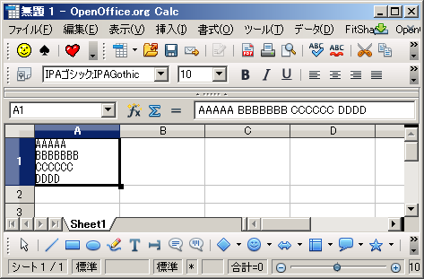

Home of site
初心者Memo / Calc No.1
( 関数 )
OOoでもExcel数種類の関数を覚えれば大半の事は出来ます。本ページでは必要最小限の関数等を紹介していきます。
1.演算関数：数値の足し算、掛け算等を行う関数
1) Sum : 指定範囲の数値を足し合わせて合計を返す。
2) SubTotal : ワークシートの途中に小計等を表示したいけど、この数値は合計には入れたくない場合に使う。
3) SumIf : 指定範囲において条件が一致する行の値のみを足し合わせて合計を返す。
4) SumProduct : 指定の行列内において一致する要素を乗算し、それらの積の和を返します。
5) CountIf : セル範囲内で特定の基準を満たすセルの数を返します。
【使用方法】
1) Sum
Calc ： =SUM(指定範囲)
Excel : 同じ
2) SubTotal :";"と","の違いに注意 ← LibreOfficeではExcelと同じ","
Calc : =SubToTal(9;指定範囲)
Excel : =SubTotal(9,指定範囲)
9は合計を出す場合に使う関数インデックス。
1 : 平均 (Average)
2 : カウント (Count)
3 : カウント (CountA)
4 : 最大値 (Max)
5 : 最小値 (Min)
6 : 合計積 (Product)←あまり使わない。
7 : 標準偏差を予測 (STDEV)←あまり使わない。
8 : 標準偏差 (STDEVP)←あまり使わない。
9 : 合計 (SUM)
10 : 不偏分散を予測 (VAR)←あまり使わない。
11 : 分散値 (VARP)←あまり使わない。
3) SumIf : ";"と","の違いに注意 ← LibreOfficeではExcelと同じ","
Calc : =SumIf(範囲; 条件; 合計範囲)
Excel : =SumIf(範囲,条件,合計範囲)
4) SumProduct : ";"と","の違いに注意 ← LibreOfficeではExcelと同じ","
Calc : =SumProduct(行列 1; 行列 2...行列 30)
Excel : =SumProduct(行列 1, 行列 2...行列 30)
5) CountIf : ";"と","の違いに注意 ← LibreOfficeではExcelと同じ","
Calc ：=CountIf(範囲; 検索条件)
Excel ：=CountIf(範囲,検索条件)
2.論理関数：条件にて処理を分岐させる関数
1) If : 条件によって処理を分岐
2) And ： 複数の条件が全て一致した場合に所定の処理を実行
3) Or : 複数の条件の１つが一致した場合に所定の処理を実行
4) IsError : #N/A エラー値を含むエラー状態をテストし、TRUE または FALSE を返します。
5) IsBlank : セルの内容が空の場合に TRUE を返します。この関数は、セルの内容が空であるかどうかを検査します。数式が入っているセルは空ではありません。
【使用方法】
1) If : ";"と","の違いに注意 <= LibreOfficeではExcelと同じ","
Calc ： =IF(A1＞5;100;"too small") : A1 の値が 5 より大きい場合、値 100 が現在のセルに入力されます。それ以外の場合は、テキスト「too small」を返す。
Excel ： =IF(A1＞5,100,"too small")
2) And :";"と","の違いに注意 <= LibreOfficeではExcelと同じ","
Calc : =AND(12＜13;14＞12;7＞6) は、FALSE を返します。
Excel : =AND(12＜13,14＞12,7＜6) は、FALSE を返します。
3) Or : ";"と","の違いに注意 <= LibreOfficeではExcelと同じ","
Calc : =OR(12＜11;13＞22;45=45) は、TRUE を返します。
Excel : =OR(12＜11,13＞22,45=45) は、TRUE を返します。
4) IsError
Calc : =ISERROR(1/0)はTrueを返します。
Excel : 同じ
5) IsBlank
Calc : =IsBlank(A1)はtrueを返します。(但しA1は空白[スペースも駄目])それ以外はfalseを返す。
Excel : 同じ
3.超基本操作

1) Cell内での改行
Calc : CTL + Enter
Excel : Alt + Enter
Top of Page